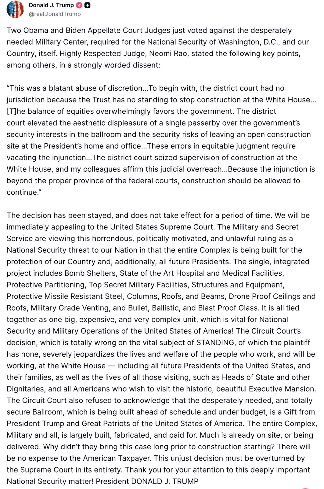
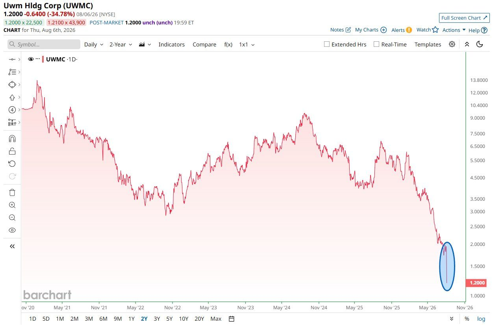
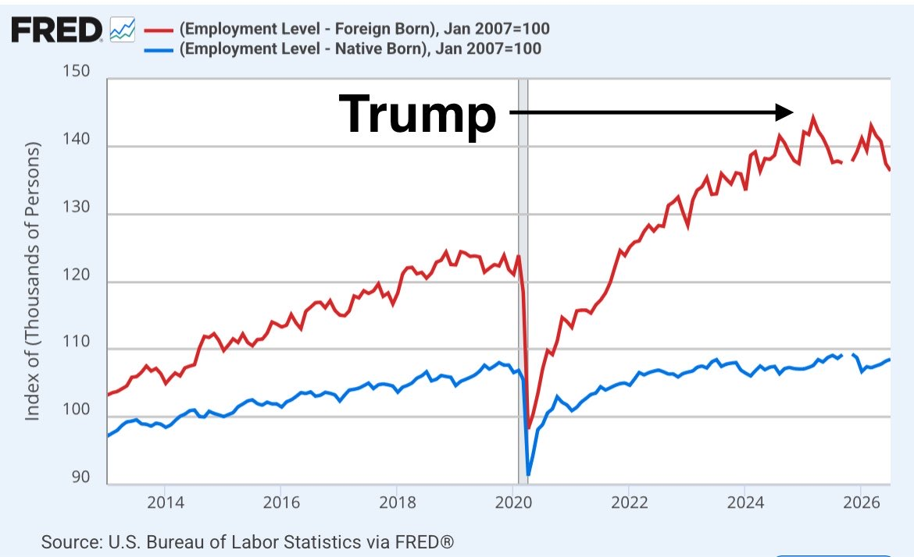

A U.S. appeals court has paused the injunction that blocked President Trump's White House ballroom project, staying the order for fourteen days and giving the administration a window to appeal to the Supreme Court. What had looked, a day earlier, like a judicial halt to construction at the Executive Mansion is now a countdown. The President cast the underlying ruling as an act of two 'Obama and Biden' appellate judges against a 'desperately needed Military Center,' and quoted at length from Judge Neomi Rao's dissent, which held that the plaintiff Trust had no standing and that the district court had substituted 'the aesthetic displeasure of a single passerby' for the government's security interest. For a chronicle tracking the slow collision between the bench and the presidency, the ballroom has become the season's unlikely test case.
In a lengthy statement, President Trump attacked the circuit court's decision as 'horrendous, politically motivated, and unlawful,' and quoted Judge Neomi Rao's strongly worded dissent: the district court, she wrote, 'had no jurisdiction because the Trust has no standing to stop construction at the White House,' and its injunction lay 'beyond the proper province of the federal courts.'

The President alleges deliberate vandalism at the Reflecting Pool and turns his fire on Norm Eisen, CREW and ActBlue, urging U.S. Attorney Jeanine Pirro to revisit the case.
Trump urges the Senate to stay in Washington until the Protect College Sports Act passes, framing it as a shield for women's and Olympic sports.
Majority Leader John Thune's office told crypto-industry leaders that he still intends to file cloture on the motion to proceed to the Clarity Act before the August recess, a move that would tee up a September vote and is being read as a sign that GOP leadership means to prioritize the bill. A second scoop, later confirmed by Thune himself, put the actual vote firmly in September.
United Wholesale Mortgage, the biggest U.S. mortgage lender, fell to an all-time low after its largest single drop on record.

“This war must end. Everyone is responsible for this.”— @FmrRepMTG, on the Foreign Desk
Since President Trump took office, one widely-shared post argues, 1.3 million foreign-born workers — legal and illegal — have lost a job, while 1.7 million native-born Americans have gained one.

Treasury Secretary Bessent announces the administration will crack down on banks providing financial services to undocumented immigrants.
A video circulated as 'the reality of conscription in Ukraine' shows a woman screaming as her boyfriend is dragged from a car to be sent, in the poster's words, to 'the front line meat grinder' — while the politicians on both sides 'never have to pay this price.'
▶ Watch on XA viral post claims white British students are now a minority at more than 20% of the country's universities.
Effective immediately, the Department of War announced, it has revoked former Secretary of the Air Force Frank Kendall's eligibility for access to classified information and his ability to hold any sensitive position.
The President says the 'leakers' of 'treasonous' munitions statements are being hunted down and that long jail sentences will be sought, while touting record defense-plant construction.
Scientists at the Arc Institute in Palo Alto, a widely-shared post reports, have used artificial intelligence to create 'entirely new kinds of viable viruses that have never existed before in nature,' with the study published in Science and reported by the New York Times.
Sam Altman says the powerful 'astra' model will be made generally available, but that its cyber capabilities mean a little longer is needed to release it safely.
China opens its first school for robots, where humanoids will be trained before entering the workforce.
Spencer Pratt says he is working with the President on a 25% federal film tax credit 'to bring back Hollywood,' contrasting the effort with Governor Newsom's commissioner 'actively outsourcing production jobs to Hungary' and an attorney general he accuses of trying to 'destroy CA production companies.'
One post argues the only way to stop urban crime is 'Judge Dredd style policing,' contending the courts simply can't cope.
A post touts a reported 1.78 million tons of tungsten discovered in the Nevada desert, framing it as a critical-minerals win.